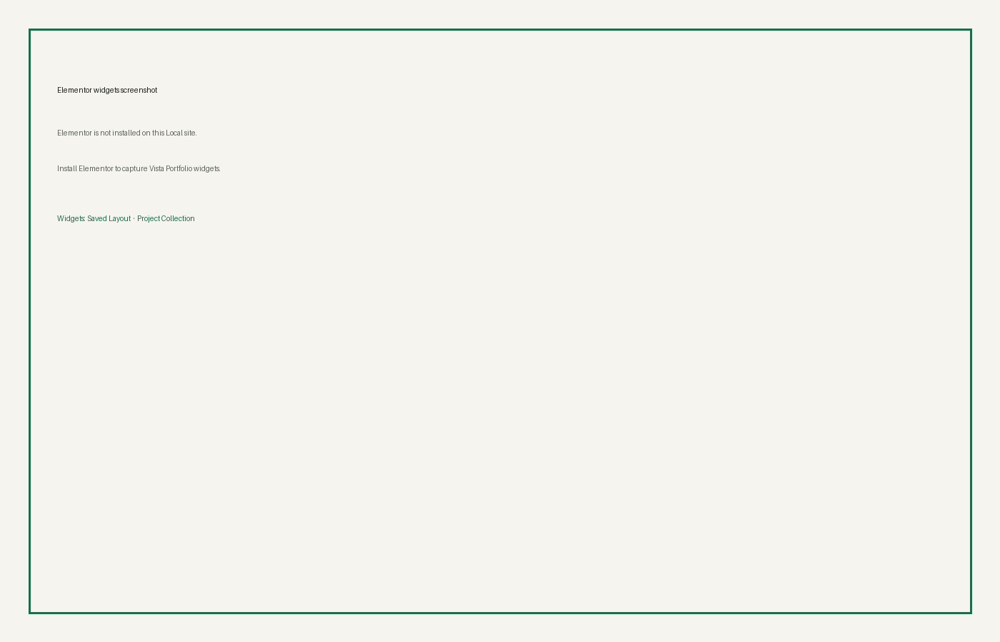

Elementor Integration
When Elementor is active, Vista registers a widget category Vista Portfolio with:
- Saved Layout — pick a published Saved Layout
- Project Collection — inline collection settings

See How to Use Elementor.
When Elementor is active, Vista registers a widget category Vista Portfolio with:

See How to Use Elementor.